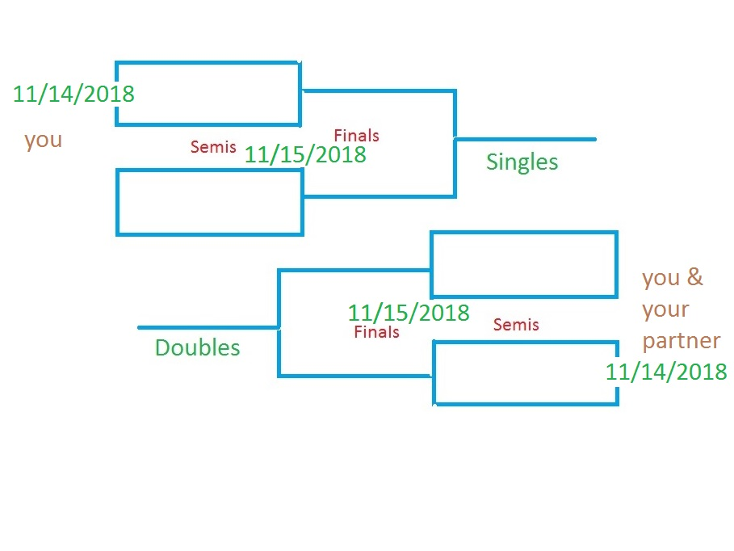

|
You may register for singles or doubles or both. |
To register, email me at bmclean@georgiasouthern.edu |
Include name, tournament nick name, partner's name if playing doubles. Also your email and cell phone number. |
Singles' RegistrantsBill Hugh Jazz Mac |
 | Doubles' RegistrantsHugh Jazz & Mac |